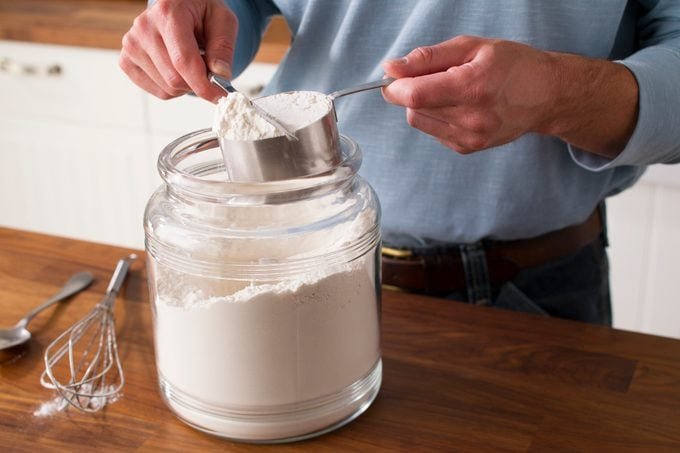

Here are our top tips for how to properly measure flour:
Never sift your flour before measuring unless your recipe specifically says to. Doing so will result in a
lot less flour than the recipe calls for.
Before measuring, fluff up the flour in the container by stirring with a spoon or whisk.
Don’t use your measuring cup to scoop the flour. Spoon it into the measuring cup for better accuracy.
There’s a right way to measure wet and dry ingredients, so make sure you’re using a measuring cup
that’s made for dry ingredients. A coffee mug, rice measuring cup or a measuring cup for wet
ingredients won’t give you the correct result!
Don’t pack the flour down with the spoon as you’re scooping. Compressing the flour will give
you an inaccurate result.
Flour settles in storage, so it needs to be loosened with a spoon or whisk. Aerating the flour helps prevent overmeasuring.
Next, spoon the flour into a measuring cup until heaping (piled beyond the rim of the measuring cup). Never scoop the flour with the measuring cup.
Finally, level the flour with the flat side of a knife. This should give you about 125 grams (4-1/4 ounces) of flour—a standard cup.
For the most precise measurement, our Test Kitchen recommends measuring without measuring cups. In other words: Use a kitchen scale. To measure flour (or any ingredient), place a bowl on the scale, tare to zero and then add your flour.